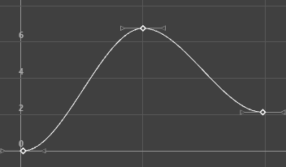
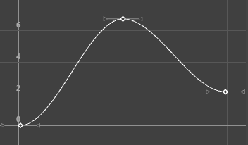
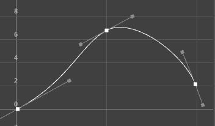
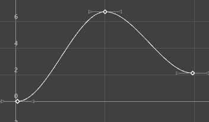

关键帧(Keys)
- 删除关键帧(Delete Keys)
-
删除当前关键帧。选择“删除关键帧”(Delete Keys)>
 以打开删除关键帧选项(Delete Key Options)。
以打开删除关键帧选项(Delete Key Options)。
- 转化为关键帧(Convert to Key)
-
将选定的受控关键点转化为关键帧。
- 粘贴关键帧(Paste Keys)
-
将当前位于虚拟剪贴板中的关键帧粘贴到当前时间指示器所在的时间线。选择“关键帧粘贴”(Paste Keys)>
以打开粘贴关键帧选项(Paste Key options)。
- 添加中间帧(Add Inbetween)
-
在当前时间插入中间帧。
- 复制关键帧(Copy Keys)
-
选择“复制关键帧”(Copy Keys)>
以打开“复制关键帧选项”(Copy Keys Options)。
- 移除中间帧(Remove Inbetween)
-
在当前时间的中间帧。注： 使用“移除中间帧”(Remove Inbetween)时，关键帧之间的空间将减小。这可能会导致关键帧冲突并且出现无法预计的行为。
- 剪切关键帧(Cut Keys)
-
剪切当前关键帧并将其存储在虚拟关键帧剪贴板中。
选择“剪切关键帧”(Cut Keys)> 以打开“剪切关键帧选项”(Cut Keys Options)窗口。此窗口除了包含复制关键帧选项(Copy Keys Options)窗口中的相同选项外，还包含：
调整(Adjustment) 指定在剪切关键帧集之后如何将其复制到关键帧剪贴板（“分段”(Segments)启用时可用）。 无(None) 指定剪切处于指定范围内的关键帧。如果存在仍与已删除区域的两端相邻的关键帧，那么产生的动画曲线将在剪切区域中保留关键帧的出切线和入切线。 收拢(Collapse) 指定移除指定范围内的关键帧。会将在剪切之前的所有关键帧移动到剪切区域的开始时间，从而有效地向前缓慢移动动画曲线以填充产生的间距。 连接(Connect) 调整关键帧剪贴板曲线值，并调整跟随已粘贴分段的原始曲线的分段。这样可防止动画中的不连续（启用“收拢”(Collapse)时可用）。 - 转化为受控关键点(Convert to Breakdown)
-
将选定关键帧转化为受控关键点。有关受控关键点关键帧和默认关键帧之间差异的详细信息，请参见受控关键点。
切线(Tangents)
- 样条线(Spline)
-

指定样条线切线将选定关键帧之前和之后的关键帧之间创建一条平滑的动画曲线。曲线的切线共线（均位于相同的角度中）。这样可以确保动画曲线平滑地进出关键帧。为流体移动设置动画时，样条线切线是一个很好的开始位置。您可以使用最少的关键帧达到所需的外观。
- 固定窗
-

指定固定切线之后，编辑关键帧时，关键帧的切线将保持不变。
设置球的动画时，您可能会发现，球并不会从理想的高度落下，但它对地板和所有其他事物的影响十分完美。使用固定切线，可以在保留切线角度的同时，更改球的高度。这与“关键帧 > 烘焙动画”(Key > Bake Animation)稍有不同。
如果需要执行以下操作，则该处理十分有用：
- 编辑一条动画曲线，而不是影响单个属性行为的所有起作用属性，例如，受驱动关键帧或“表达式”(Expression)影响的对象。
- 将关键帧添加到现有曲线
- 平坦(Flat)
-

在具有加权切线的曲线上设置的平坦切线
将关键帧的入切线和出切线设定为水平（渐变为 0 度）。球在达到上坡度时，在开始下降之前，它将在空气中做短暂的悬停。可以通过使用平坦切线来创建这种效果。
- 高原(Plateau)
-
在具有加权切线的曲线上设置的高原切线
高原切线不仅可以在其关键帧（如样条线切线）轻松输入和输出动画曲线，而且还可以展平值相等的关键帧（如钳制切线）之间出现的曲线分段。高原切线的行为通常类似于样条线切线，但它可以确保曲线的最小值和最大值均位于关键帧中。
如果需要关键帧的位置十分精确，则高原切线十分有用，因为它们可以确保曲线的最小值和最大值（丘陵和山谷）不会延伸超过其关键帧。例如，绘制球从桌子中滚下、落到地面、然后在地面上翻滚的动画图片。使用样条线切线，球可以落到地面上，然后再次回落到地面。使用高原切线，球不会落到地面上。切线可保证动画不会超出设定关键帧的值范围之外。
为此，如果样条线切线将在两个关键帧之间生成最小值或最大值，则高原切线将会展平相关的关键帧。曲线的局部最小点和最大点中的关键帧也会展平。最后，如果曲线的第一个关键帧和最后一个关键帧具有高原切线，则它们始终会展平。
- 线性(Linear)
-

指定线性切线之后，系统会将动画曲线创建为接合两个关键帧的直线。如果入切线类型为线性，则关键帧之前的曲线分段为直线。如果出切线类型为线性，则关键帧之后的曲线分段为直线。为炉子中的加热元素的颜色设置动画时，您可以使用线性将颜色从炭灰色逐渐更改为燃烧的火红色。
- 阶跃下一个
-
默认情况下，FBIK 动画关键帧使用“阶跃下一个”切线类型。该切线类型与常规阶跃切线不同，其插值会立即跳至下一个关键帧的插值，而不是在达到下一个关键帧之前始终保持当前关键帧的值。
- 钳制(Clamped)
-
指定钳制切线时，系统将创建具有线性和样条曲线特征的动画曲线。
-
除非两个相邻关键帧的值十分接近，否则关键帧的切线将为样条线。在这种情况下，第一个关键帧的出切线和第二个关键帧的入切线将作为线性插值。
-
为循环行走中骨架设置动画时，您可能会注意到，骨盆和脚关节的位置落后。这是因为曲线中的关键帧的值相同，或者与其他值接近（在容差范围内）。Maya 将指定默认样条线切线，以描述这些关键帧之间出现的现象。这就是关节位置落后的原因。
-
通过将这些关键帧的切线类型设定为“钳制”，可以校正进度落后现象，并且使切线成为线性和样条线的组合。
在 Maya 环境首选项中，“钳制”(Clamped)是默认的切线类型。
- 阶跃(Stepped)
-
指定阶跃切线时，系统将创建其出切线为平坦曲线的动画曲线。
由于曲线分段为平坦（水平），因此该值将在每个关键帧中更改，且不会出现层次。
闪光灯中的灯光将打开和关闭。若要创建类似于闪光灯的效果，则需使用阶跃切线。
提示： 若要像所有关键帧均具有阶跃切线一样快速预览动画，请在“时间滑块”(Time Slider)上单击鼠标右键，然后切换“启用阶跃预览”(Enable Stepped Preview)选项。如果启用“启用阶跃预览”(Enable Stepped Preview)，播放动画可以在对象碰到每个关键帧时快速查看这些对象的位置。如果禁用“启用阶跃预览”(Enable Stepped Preview)，曲线将返回到其原始切线类型。